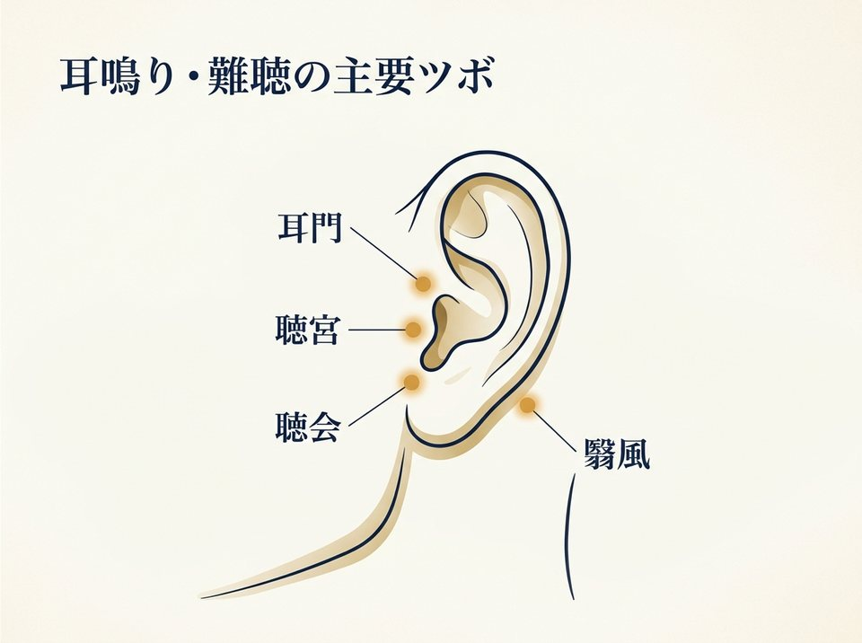

耳管開放症の鍼灸
耳管が開いたままになり自分の声や呼吸音が響く症状です。耳鼻科診療と併用し、三間のお灸や翳風・完骨への鍼灸で全身バランスと血流を整えます。


院長YouTube解説・関連動画
耳管開放症の主な原因は、体重が減ること
耳管開放症の主な原因は、体重が減ることです。他にも、脱水や妊娠、女性ホルモン薬、生まれつきの耳管構造の弱さなども耳管開放症の原因です。
普段、耳管は閉じており唾を飲み込んだりあくびをしたりしたときに開きます。耳管は開いてもすぐに閉じるものですが、耳管開放症では開いたままになってしまうのです。
体重減少:体重が急激に減少すると、耳管周辺の脂肪組織が減少し、耳管が異常に開いてしまうことがあります。これは、耳管開放症の最も一般的な原因の一つです。
妊娠:妊娠中のホルモン変化が耳管の筋肉に影響を与え、耳管開放症を引き起こすことがあります。
慢性的な上咽頭炎:上咽頭炎や他の咽頭の炎症が、耳管の機能に影響を与え、開放状態を引き起こすことがあります。
筋肉の弛緩または筋力低下:耳管を支える筋肉の弛緩や筋力低下が、耳管の正常な閉鎖を妨げることがあります。
ストレスまたは緊張:ストレスや緊張が耳管の筋肉に影響を及ぼし、開放状態を引き起こすことがあります。
放射線:頭頸部への放射線が耳管機能に影響を与えることがあります。
神経筋の病気:特定の神経筋の病気が耳管の機能に影響を及ぼし、その開放状態を引き起こすことがあります。
耳管開放症の症状は、自分の声や呼吸音が大きく響くことや耳閉感
耳管開放症の症状は、自分の声や呼吸音が大きく響くことや耳閉感です。これは、耳管が空いていることによって自分の声や呼吸による圧力が鼻側から直接耳側に強いままの状態で伝わることによって現れる症状です。
耳管開放症の特徴として、布団に横になったり深く頭を下げたりする姿勢になると一時的に症状が軽くなるということがあります。これは、耳管の周りの血管が膨らんで管が狭くなることで現れる特徴です。
症状の程度が重い場合には、横になったり頭を下げたりしても症状が軽くならないこともあります。
自己語音難聴:自分の声や呼吸音が異常に大きく、または共鳴するように聞こえる現象が起こります。これは耳管開放症の非常に典型的な症状です。
耳の圧迫感:耳の中に圧力がかかっているような感覚や、耳が塞がれているような感じがすることがあります。
耳鳴り:耳鳴りを伴うことがあり、特に静かな環境で著しく現れます。
声のエコー:自分の声が耳の中でエコーするように聞こえることがあります。
バランス感覚の問題:人によってはバランス感覚に影響を及ぼすこともあります。
聴力の変化:耳管が開いた状態により、周囲の音が異常に大きく感じられることがあります。
耳管開放症の改善方法は、薬です。ATP製剤や加味帰脾湯や補中益気湯などの漢方薬を使うことが多いです。
鼻から生理食塩水を入れたり、鼓膜の表面に小さなテープを貼ったりする方法で改善を行うこともあります。
薬などによって改善を行なってもあまり効果が見られない場合や症状が重い場合は耳管ピン挿入術や鼓膜換気チューブ留置術を行うこともあります。
耳管開放症の原因が体重が減ったことである場合は、まずきちんと栄養をとって体重を落とさないことが改善に非常に大切です。脱水によって起こることもあるため、十分な水分を心がけることも大切です。
鼻をすすることによって中耳炎を起こしてしまうこともあります。中耳炎を起こさないためにも鼻はすすらないように注意しましょう。
生活習慣の調整:体重が原因である場合、体重を増やすことで症状が改善することがあります。水分摂取量を増やし、脱水状態を避けましょう。
鼻噴霧薬:鼻噴霧薬が、一時的な症状の緩和に役立つことがあります。
口腔内の改善:唾液の分泌を促進するために、硬い食べ物を噛む、ガムを噛むなどの方法があります。
耳管閉塞法:症状が強い場合、耳管を一時的に閉塞する手段が試されることがあります。これには、特別なテープや耳栓を使用することが含まれます。
手術:耳管開放症が重度で、他の改善法で改善が見られない場合、耳管を狭めるための外科的処置が検討されます。手術は耳管に注射を行ったり、耳管を物理的に狭める手術を含むことがあります。
リハビリテーション:呼吸法や姿勢など、耳管の機能を正常化するためのリハビリテーションが行われることがあります。
耳管注射:この手術では、耳管の壁に膨潤剤を注入して耳管を狭めます。注射は局所麻酔下で行われ、耳管の開き過ぎを防ぐことを目的としています。
耳管形成術:耳管に小さなインプラントやステントを挿入して、耳管を物理的に狭める手術です。この方法は、耳管の開放状態を調整し、症状の改善を目指します。
筋肉移植術:顔面の筋肉の一部を耳管周辺に移植することで、耳管をサポートし狭める手法です。これはより複雑で侵襲性の高い手術であり、主に他の方法で効果が見られない場合に検討されます。
耳管閉塞術:非常に重度の場合には、耳管を外科的に閉塞することもありますが、これは稀な方法であり、慎重に検討されるべきです。
耳管開放症の改善方法は、水分補給や痩せないようにすること、生理食塩水点鼻療法などの保存療法が中心でしたが、耳管ピンは根本的な解決を生むと言われています。耳管ピンはなかなか改善しない耳管開放症の耳管を閉塞させる機器です。
製造販売承認を取得している機器としては世界で初めての製品です。医師主導の治験では８０%の人が改善したという報告があります。
耳管開放症に対する耳管ピンの手術は日本で３人しかできません。仙台の小林俊光先生、東京末広町にあるヒライ耳鼻咽喉科、東京板橋にある日大板橋病院です。
耳管ピンのメリットは、耳管開放症の状態にピンのサイズが合えば効果が長期間続くことと保険の適応が可能なことです。
デメリットはピンが緩くなることがあるため定期的なチェックが必要なこと、飛行機に乗るときに鼓膜チューブが必要なこと、治験では穴が若干残ってしまったり中耳炎などの合併症が１０〜１５%起きていることです。
ただし、根本的な耳管開放症の改善になるかもしれないため非常に期待できる改善方法です。
当院でも耳管開放症の人の来院はありますが実際に改善することは正直難しいです。鍼で時間を本当に耳管を狭くすることができるのか確認できないこと、耳管開放症が問題で悩んでいるのか耳に他の脳などの原因で悩んでいるのか区別ができないことが多いことなどがあるためです。
ただ、当院でも耳管開放症で耳鳴りや反響する音が改善したという人もいます。その人は実際に病院で耳管開放症という判断をされていても良くなりました。耳管が解放していても、響く人も詰まる人もいます。耳管ピンが適さない人もいるため、耳鼻科の先生の話をきちんと聞いてメリットデメリットを検討することが大事です。
耳管開放症に効果的なツボ
三間は、肩や腕の痛みや、指の痛みやしびれに効果的なツボです。急性の目の痛みや歯の痛み、喉の腫れや痛み、鼻血、口の渇きなどにオススメです。
呼吸器系や消化器系の症状にも使われるツボで、咳や下痢、便秘などにも効果的です。
翳風は、耳鳴りや難聴など、耳の不調に効果を発揮するツボです。
頭痛、吐き気、顔面部の浮腫み、目の充血、咽頭部の腫れや疼痛、口の目の歪み、歯の痛み、頬の腫れ、耳鳴り、難聴などにも使われます。
完骨は、副交感神経を整える効果のあるツボです。内臓への血流を良くすると言われており、浮腫を改善しリンパの流れをよくしてくれます。
顔の周りの血行も良くなるため、不眠や肌荒れや吹出物などにも効果的です。
三間は、人さし指の中手指節関節の上にあるツボで、親指側にあるへこみにあるツボです。
耳管開放症では三間に毎日お灸を行うことで体のバランスを整える効果があり、改善に効果的であると言われています。
翳風は、耳たぶの後ろ側を指でなぞるとへこんでいる場所にあります。口を開けるとくぼむところです。
押す時には、中指を使って押しましょう。首は神経が集中している場所のため、左右のツボを気持ちよく感じるくらいの力でゆっくり押しましょう。
完骨は、耳の後ろにある出っ張った骨の下側のくぼみにあるツボです。
押すときは、親指を使って押しましょう。上に押し上げるようにゆっくり押してください。
▼ 詳しく知りたい項目だけタップして開けます（全項目の医学解説を収録）
01. 原因とメカニズム
なぜ症状が起きるのか・鍼灸の作用機序を読む
▼
01. 原因とメカニズム
なぜ症状が起きるのか・鍼灸の作用機序を読む
耳管開放症は、通常は閉じていて嚥下やあくびのときだけ開く耳管（中耳と鼻咽喉をつなぐ管）が開きっぱなしになる病気です。主な原因として急激な体重減少に伴う耳管周囲の脂肪減少や血流低下、脱水、疲労、ストレスなどが挙げられます。声や呼吸圧が中耳へ直接伝わるため強い苦痛を伴い、耳鼻咽喉科では漢方薬などの薬物療法や耳管ピン・処置などが検討されます。
なぜ鍼灸で改善へ向かうのか？（作用機序の図解）
耳管開放症に対する鍼灸は、耳周囲・頸部の微小循環改善と聴覚・粘膜調整機序を通じて、お体本来の回復力を引き出します。
翳風・風池・合谷など、耳鼻咽喉領域の神経・血管と連動する経穴へ繊細にアプローチします。
首・顎まわりの深層筋緊張を緩め、内耳や粘膜周囲の滞った血流とリンパ循環を促します。
ストレスや睡眠不足で高ぶった交感神経を鎮め、音への過敏反応や粘膜の過剰反応を和らげます。
標準治療を妨げない設計で、生活支障度（THI等）の軽減と再発しにくい体調づくりを支えます。
02. よくあるお悩み
このような症状はありませんか？（4項目）
▼
02. よくあるお悩み
このような症状はありませんか？（4項目）
- ✓自分の声や呼吸音が耳の中で大きく響いて会話がつらい
- ✓耳が塞がったような耳閉感や圧迫感が続いている
- ✓横になったり頭を深く下げたりすると一時的に症状が軽くなる
- ✓急な体重減少や疲労・ストレス後から症状が気になり始めた
03. 当院の施術アプローチ
施術の進め方・改善のポイントを見る
▼
03. 当院の施術アプローチ
施術の進め方・改善のポイントを見る
04. ツボ詳細・セルフケア一覧
突発性難聴・耳管不調・顎関節症のツボ図解（6穴）
▼
04. ツボ詳細・セルフケア一覧
突発性難聴・耳管不調・顎関節症のツボ図解（6穴）
実際の施術ではお一人おひとりの体質・症状に合わせて選穴しますが、突発性難聴・耳管開放症/狭窄症・顎関節症・食いしばりのケアの臨床でよく用いられる代表的なツボの目安です。
| ツボ名 | 位置の目安 | 主な狙い | セルフケアの注意点 |
|---|---|---|---|
| 耳門（じもん） | 耳の穴の前上、口を開けるとくぼむ上部 | 耳鳴り・耳閉感・側頭部の緊張緩和 | 突発性難聴は発症48時間以内の耳鼻科受診が最優先です。 |
| 聴宮（ちょうきゅう） | 耳の穴の真ん中の前、口を開けるとくぼむ所 | 内耳の微小循環・聴覚過敏や耳管不調のサポート | 口を軽く開けた状態で優しく触れます。 |
| 聴会（ちょうえ） | 耳たぶの付け根の前、口を開けるとくぼむ下部 | 耳周囲と顎関節の連動緊張を和らげるツボ | 強く押し込まず心地よい範囲で刺激します。 |
| 翳風（えいふう） | 耳たぶのすぐ後ろのくぼみ | 内耳循環と自律神経（迷走神経枝）の調整 | 耳周囲の冷え対策に蒸しタオルも有効です。 |
| 下関（げかん） | 耳の前、頬骨のアーチの下のくぼみ（顎関節部） | 顎関節症・食いしばり・咬筋のこわばり緩和 | 口を開閉して痛みが出る場合は無理に動かさず優しく押します。 |
| 中渚（ちゅうしょ） | 手の甲、薬指と小指の骨の間（拳のくぼみ） | 三焦経の要穴として耳の不調を遠隔から整えるツボ | 耳に触れにくい急性期でも安全に使える遠隔穴です。 |
05. 医学的根拠・国際査読論文（PubMed / Cochrane）
科学的エビデンス・出典リンク一覧（3件）
▼
05. 医学的根拠・国際査読論文（PubMed / Cochrane）
科学的エビデンス・出典リンク一覧（3件）
国際的な医学データベース（PubMed・Cochrane等）で報告されている鼻炎・副鼻腔炎・嗅覚領域の代表的な査読済み鍼灸研究をまとめています（標準治療との併用や研究上の限界を含めて正確に掲載）。
| 年・研究デザイン | 対象・規模 | 主な結果 | 限界・出典 |
|---|---|---|---|
| 2013年 大規模多施設RCT | 季節性アレルギー性鼻炎 422名（ドイツ） | 8週後の鼻炎QOL（RQLQ）と抗ヒスタミン薬使用量がシャム鍼・無治療群より有意に改善。 | 16週以降は群間差が縮小。 Ann Intern Med (PMID: 23420231) |
| 2024年 メタ解析（TSA付） | アレルギー性鼻炎 13 RCTs（n=1,186） | 鼻閉・鼻汁などの総鼻症状スコア（TNSS）およびQOL改善を示唆。 | 試験間の刺激法・評価時期の異質性が課題。 Int Forum Allergy Rhinol (PMID: 39017391) |
| 2020年 耳鼻咽喉科レビュー | 鼻炎・ウイルス後嗅覚障害等 30研究 | アレルギー性鼻炎では補助療法として診療ガイドラインでも言及が増加。 | 嗅覚障害などは方法論の統一と大規模RCTが必要。 Ann Otol Rhinol Laryngol (PMID: 32090591) |
参考文献・出典
- 2013年 大規模多施設RCT（季節性アレルギー性鼻炎 422名（ドイツ））— Ann Intern Med (PMID: 23420231)
- 2024年 メタ解析（TSA付）（アレルギー性鼻炎 13 RCTs（n=1,186））— Int Forum Allergy Rhinol (PMID: 39017391)
- 2020年 耳鼻咽喉科レビュー（鼻炎・ウイルス後嗅覚障害等 30研究）— Ann Otol Rhinol Laryngol (PMID: 32090591)
06. よくある質問（FAQ）
よくあるご質問を見る（2件）
▼
06. よくある質問（FAQ）
よくあるご質問を見る（2件）
Q. 耳管開放症に自宅でできるお灸やツボ押しはありますか？
公式サイトでも紹介している人差し指の付け根にある三間への毎日の温灸や、耳の後ろの翳風・完骨を気持ちよい強さでゆっくり押すケアがおすすめです。
Q. 耳鼻科の漢方薬や処置と鍼灸は併用できますか？
はい、耳鼻咽喉科での診断・治療と並行して受けていただけます。急な聴力低下やめまいがある場合は、先に耳鼻科で他の耳疾患がないか確認してください。
あわせて読まれる関連疾患（耳鼻咽喉のお悩み）
ある日突然片耳などが聞こえにくくなる感音難聴です。発症早期の耳鼻科ステロイド治療を最優先に、早期併用や回復期の耳鳴り・めまいをケアします。
実際には音がないのに耳の中で雑音が聞こえる状態です。耳の血流や自律神経・脳の過敏さを整えるケアで軽減を目指します。
内リンパの浮腫により低音域が聞こえにくくなる難聴です。発症早期の耳鼻科治療を最優先に、早期併用や回復期・再発予防を鍼灸で支えます。
薬剤の影響で内耳が障害される薬害性難聴。自己判断で休薬せず処方医・耳鼻咽喉科への相談を最優先に、耳の巡りを支えます。
鼓膜の奥の中耳に炎症が起きる中耳炎。急性期は耳鼻咽喉科受診を最優先に、回復期や繰り返す不調の補完的ケアを行います。
先天的な遺伝子異常で気道線毛の動きが障害される指定難病です。専門医管理と排痰ケアを最優先に安定期の体調を支えます。
CLINICAL RECOVERY CASES
✨ 実際の臨床改善事例・回復経過を見る
銀座本院をはじめ各院での実際の改善事例を症状別に絞り込んでご確認いただけます。
おひとりで悩まず、まずはご相談ください
銀座本院・川口・大宮・横浜・博多・田無の各院でご予約を承っております。